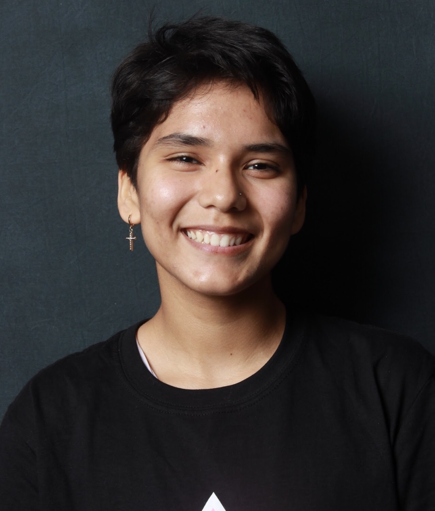

Home
Chief of Staff
☰
Home
Chief of Staff
☰
The Legislative Committee enacts Senator Tellem’s policy platforms -- including but not limited to Academic and Professional Opportunities, Campus Climate, Environmental Justice, Community Engagement and Diversity -- to create substantive change on behalf of the Berkeley community, ensuring their representation, success, and collectiving flourishing.

Maxim Miller is a second-year, majoring in Legal Studies with a minor in Journalism and Political Science. Born and raised in Los Angeles, California, you can find Maxim doing anything and everything: surfing, reading, and even questioning the nature of our universe. Maxim loves conversation, talking with anyone, and learning diverse perspectives.

Issabella Romo is a freshman majoring in Legal Studies and minoring in Human Rights. She joined the Legislative Committee in pursuing her passion for creating positive, lasting change through policies. Supporting the Latinx community on campus is a priority for Issabella, and she hopes to contribute to initiatives that create more long-term resources and opportunities for them. She enjoys playing the flute and walking her dog, Oliver (a wire fox terrier) in her free time. Her favorite artists are Ariana Grande and Dua Lipa although she also is a Tchaikovsky enthusiast.
Anallely is a Legislative Associate for Senator Chaka Tellem’s Legislative Committee. She is an intended Political Economy major and hopes to minor in Public Policy as well. Anallely is extremely passionate about representing marginalized communities and contributing to long lasting change that addresses the inequities faced by underrepresented communities. She hopes to pursue policy work and possibly attend Law school in the future. She is from Palm Springs, CA which is in SoCal. Her hobbies consist of exploring new places in the Bay, hiking, walking her dog (who she’s had since she was 7) and spending days at the beach.

Jalen is a second year studying Political Science. He is from Sacramento, CA and is a Legislative Associate for the legislative committee for Senator Tellem’s office. Jalen is also involved with other on campus activities such as Cal Dems, Cal ACLU and Cal United Nations. Jalen is very passionate about education and political advocacy amongst the youth. His favorite hobbies are playing videogames, watching tv, and traveling. After Cal, Jalen hopes to go to law school or become a high school or college level teacher/professor.
Cyn Gomez is a Legislative Associate for the ASUC Office of Chaka Tellem. They are a freshman currently intending to major in Social Welfare with a double minor in Public Policy and Spanish. Their goal is to create systematic change that uplifts underrepresented communities and fights alongside others for representation. After undergrad, Cyn wants to attend law school and practice civil rights law to protect and advocate for those who have been wronged by a system that should be built to protect everyone. They love to read, take naps, and embroider in their freetime, among going for runs and working out to destress. In their free time, you can catch Cyn planning for their next week or studying for any and every class!
Caitlin Clift is the Legislative Intern for the Office of ASUC Senator Chaka Tellem. She is currently a freshman intending to major in Political Science. Raised in Orange County, California, she is extremely passionate about immigrant rights and hopes to become an immigration lawyer in the future. She loves dogs, concerts, and making clothes and jewelry. Her favorite activities are spending the day at the beach or exploring new cities with friends.